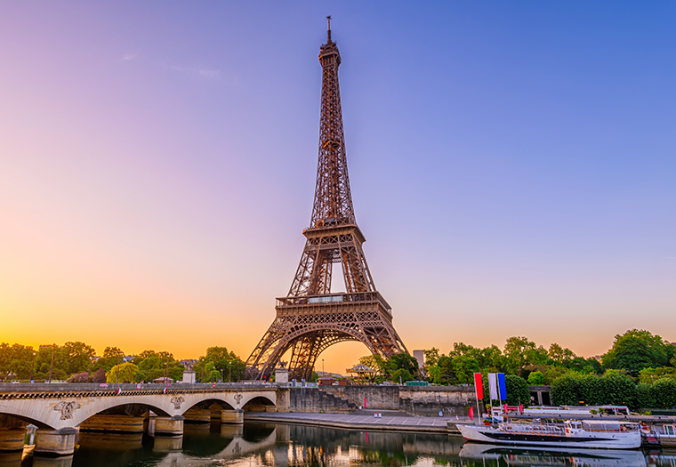
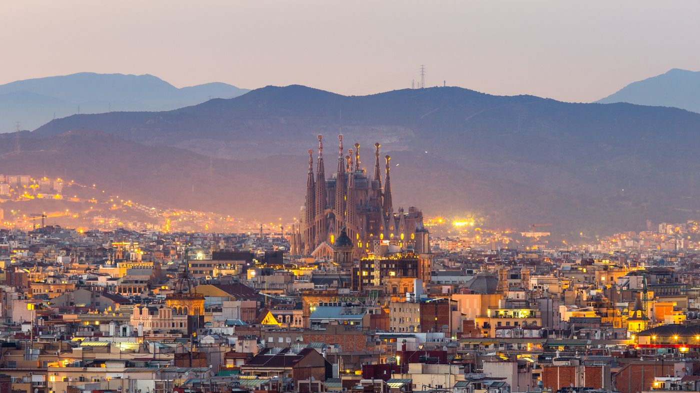
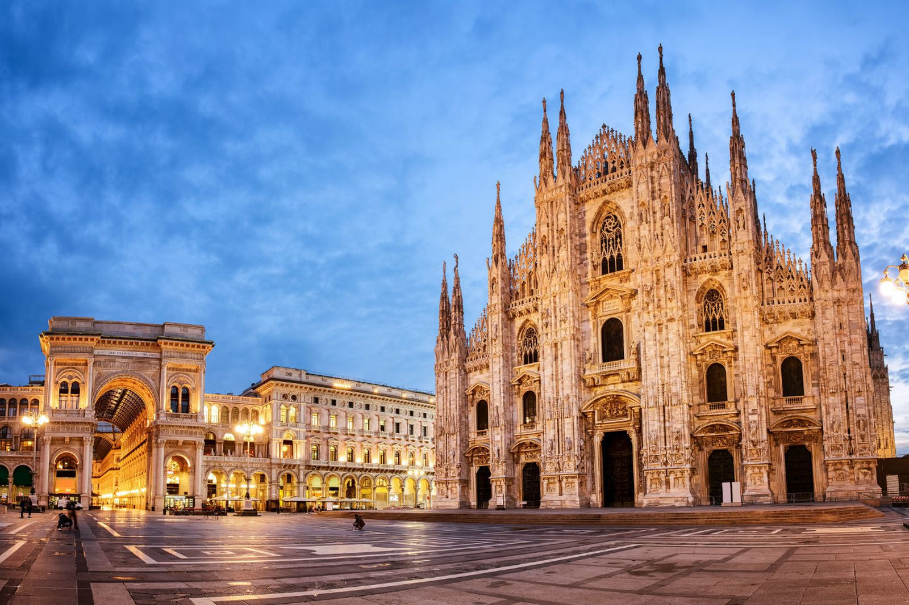
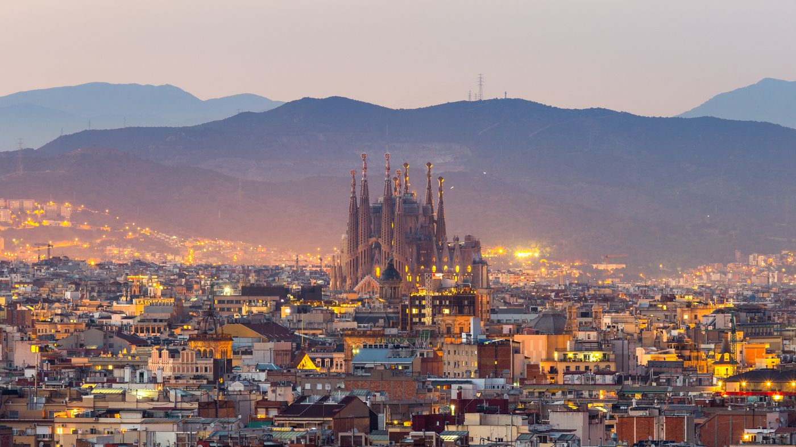
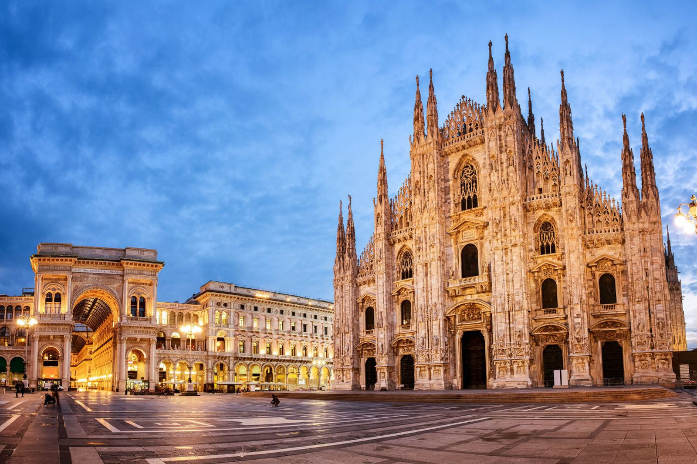

Nova putovanja



Pariz
Pariz je glavni i najveći grad Francuske. Smješten je na obalama rijeke Seine u sjevernoj Francuskoj, u središtu pokrajine Île-de-France, također poznate kao "Pariška regija".Više ...

Barcelona
Barcelona je smještena u maloj obalnoj nizini nedaleko od francuske granice u podnožju planine Collserola. Barcelona je danas važno kulturno središte i jedna od vodećih turističkih destinacija s bogatom kulturnom baštinom.Više ...

Milano
Milano je grad u Italiji, glavni grad regije Lombardije i milanske Provincije.Milano je cijenjen kao svjetsko središte mode i dizajna, s velikim globalnim utjecajem u trgovini, industriji, glazbi, sportu, književnosti, umjetnosti i masovnim medijima. Više ...